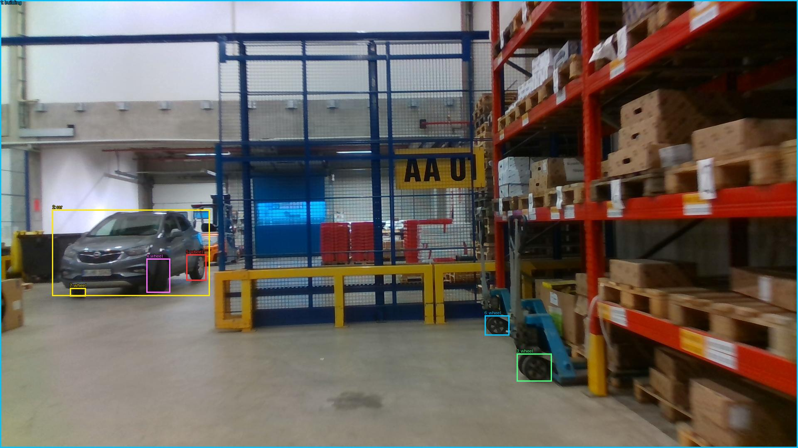

Prejšnji OD (shranjen)


Opis → phrase grounding (nov)

The image shows a large warehouse with a blue metal structure in the center. The structure has a yellow sign that reads "AA U1" and is surrounded by shelves filled with cardboard boxes. On the right side of the image, there is a car parked in the warehouse. The floor is made of concrete and there are several other vehicles and equipment scattered around the space. The warehouse appears to be well-lit with fluorescent lights.

Original · Caption raw · Grounding raw · Koordinate
Številke so lokalni ID regije. Dolge slikovne oznake so skrajšane; spodaj so celotne fraze. Napovedane regije se lahko prekrivajo ali opisujejo skupine.
| ID | Celotna fraza | bbox xyxy |
|---|---|---|
| 1 | metal structure | [507.8399963378906, 68.58000183105469, 1181.760009765625, 802.9800415039062] |
| 2 | The structure | [507.8399963378906, 337.5, 1181.760009765625, 802.9800415039062] |
| 3 | The structure | [941.7599487304688, 348.3000183105469, 1172.1600341796875, 463.8600158691406] |
| 4 | sign | [941.7599487304688, 348.3000183105469, 1170.239990234375, 462.780029296875] |
| 5 | a car | [139.1999969482422, 498.4200134277344, 500.1600036621094, 719.8200073242188] |
| 6 | The floor | [6.71999979019165, 628.02001953125, 1638.719970703125, 1074.06005859375] |
| 7 | several other vehicles | [24.0, 484.3800048828125, 580.7999877929688, 724.1400146484375] |
| 8 | The warehouse | [6.71999979019165, 10.260000228881836, 1183.679931640625, 794.3400268554688] |
| 9 | The warehouse | [6.71999979019165, 11.34000015258789, 1183.679931640625, 650.7000122070312] |